George Washington
1789–1797
John Adams
1797–1801

Thomas Jefferson
1801–1809

James Madison
1809–1817

James Monroe
1817–1825

John Quincy Adams
1825–1829
Andrew Jackson
1829–1837
Assassination attempt Jan 30, 1835

Martin Van Buren
1837–1841
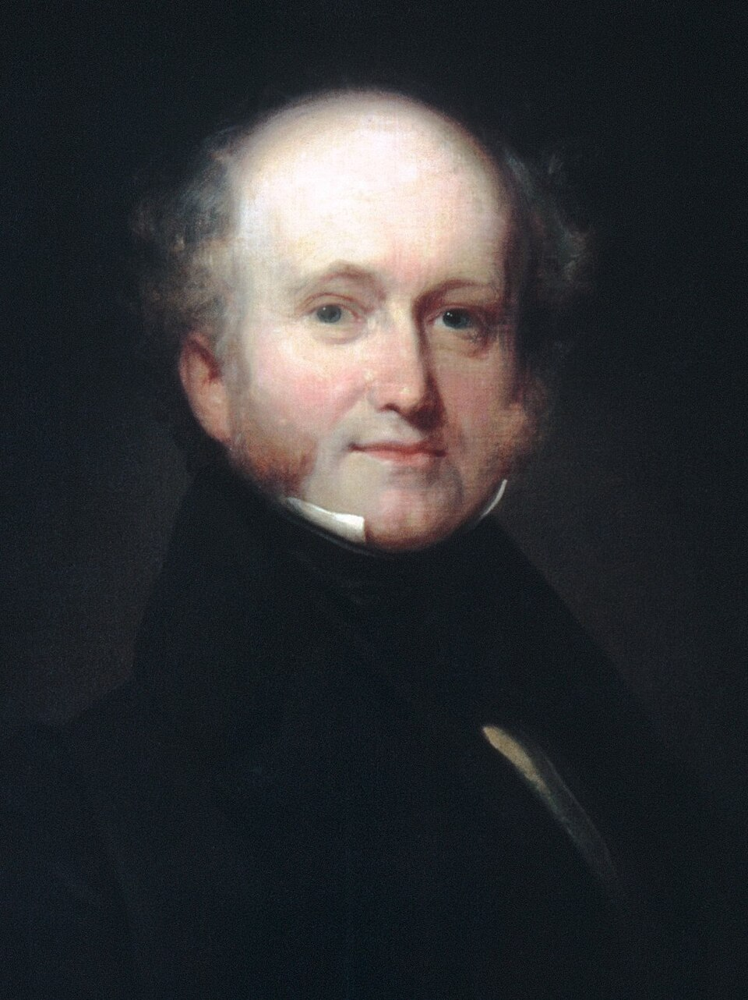
William Henry Harrison
1841

John Tyler
1841–1845

Zachary Taylor
1849–1850
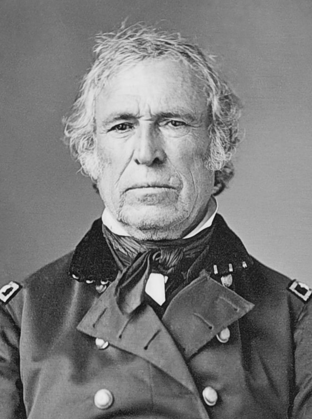
Millard Fillmore
1850–1853

Franklin Pierce
1853–1857

James Buchanan
1857–1861

Abraham Lincoln
1861–1865
ASSASSINATED APR 14, 1865

Ulysses S. Grant
1869–1877
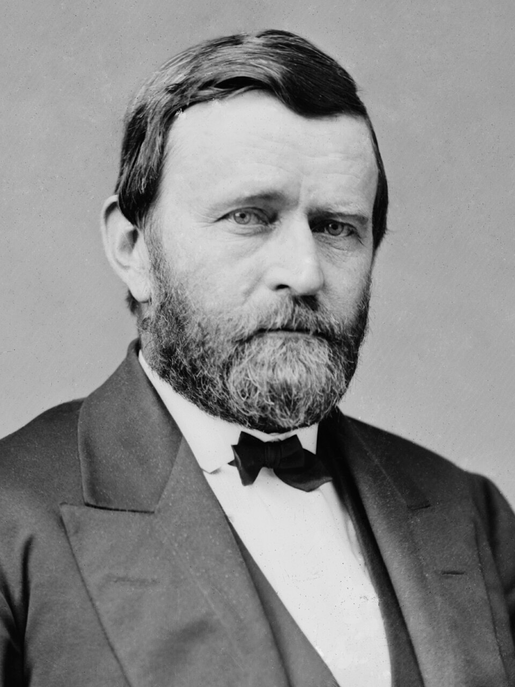
Rutherford B. Hayes
1877–1881

James A. Garfield
1881
ASSASSINATED JUL 2, 1881
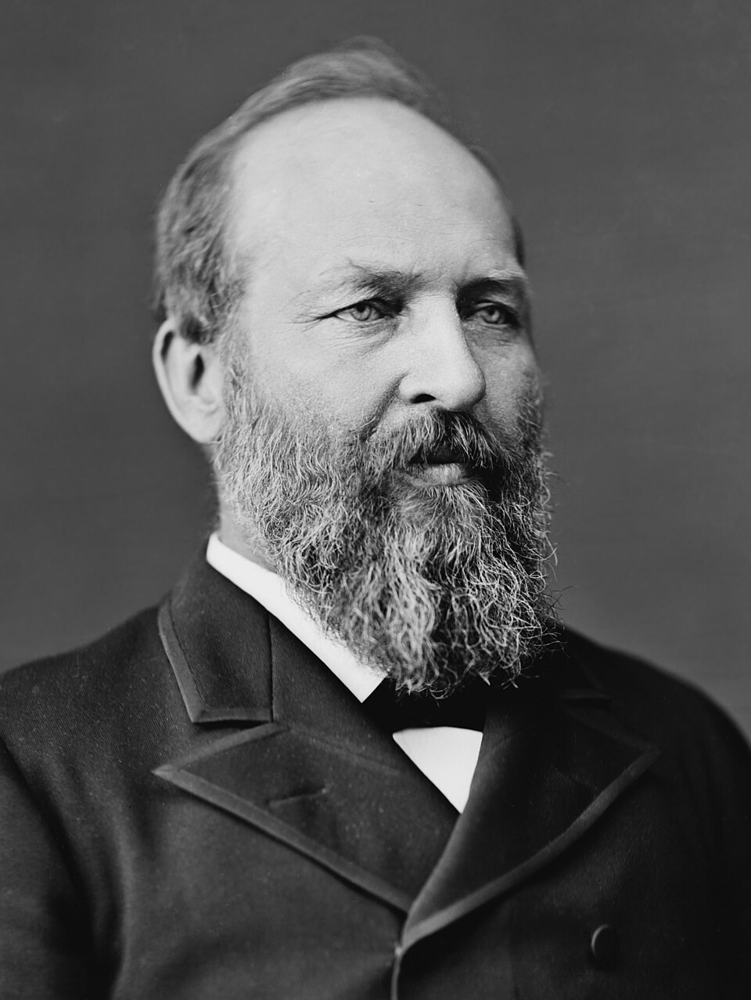
Chester A. Arthur
1881–1885

Grover Cleveland
1885–1889
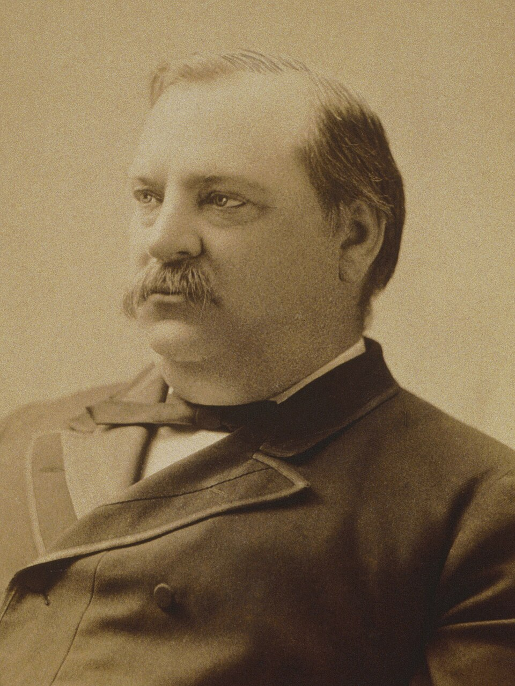
Benjamin Harrison
1889–1893-1893
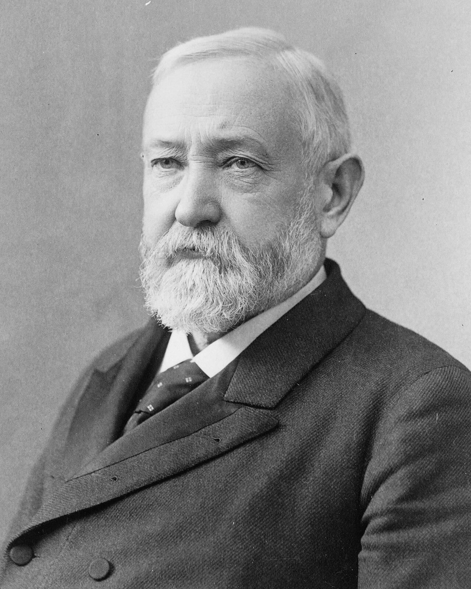
Grover Cleveland
1893–1897
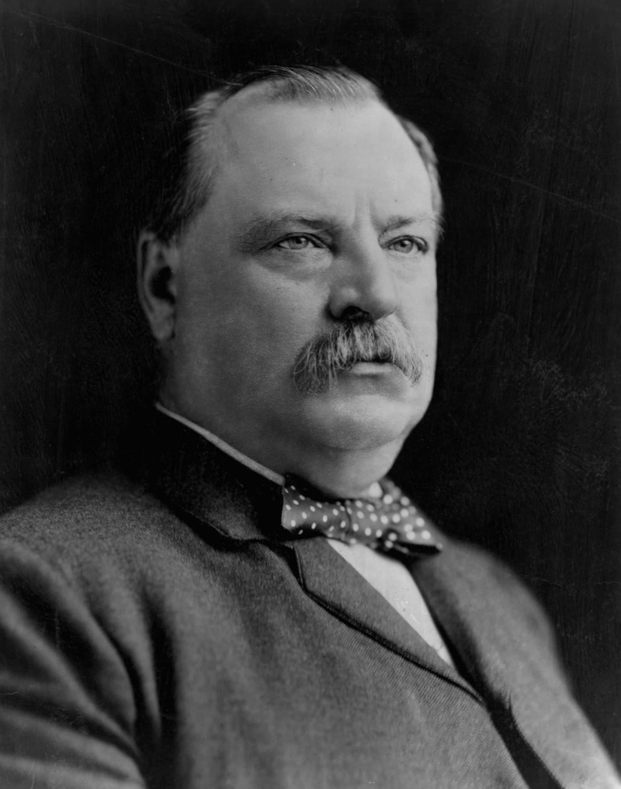
William McKinley
1897–1901
ASSASSINATED SEP 14, 1901
Theodore Roosevelt
1901–1909
Assassination attempt Oct 14, 1912

William Howard Taft
1909-1913

Woodrow Wilson
1913-1921
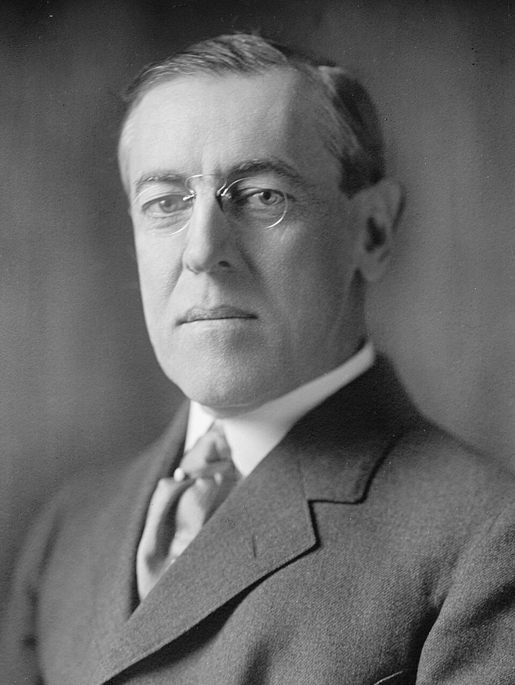
Warren G. Harding
1921-1923
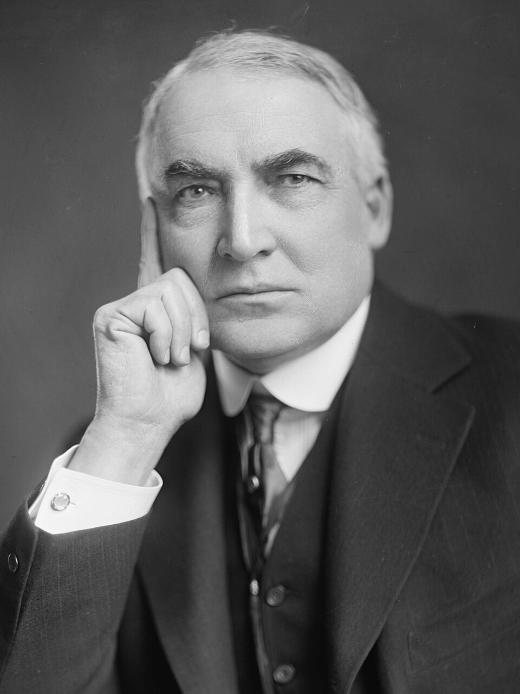
Calvin Coolidge
1923-1929

Herbert Hoover
1929-1933

Dwight D. Eisenhower
1953-1961
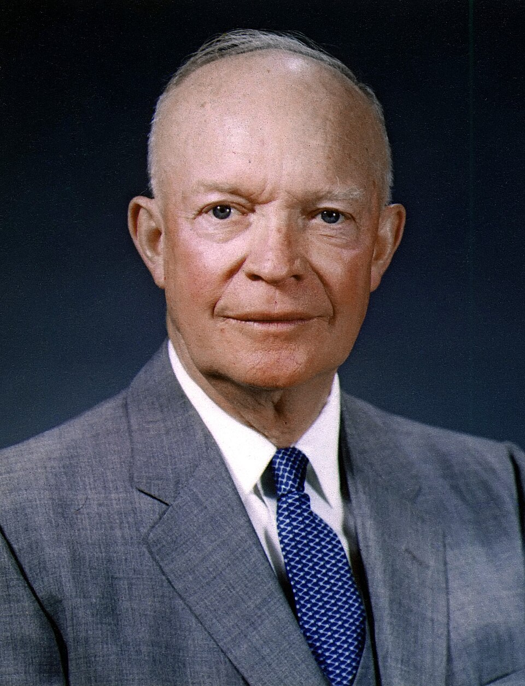
John F. Kennedy
1961–1963
ASSASSINATED NOV 22, 1963
Lyndon B. Johnson
1963–1969
Richard Nixon
1969-1974

Gerald Ford
1974-1977
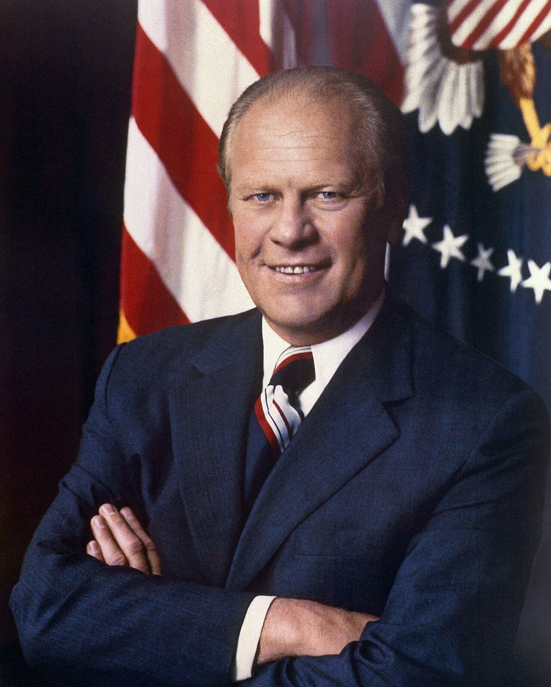
Ronald Reagan
1981-1989
Assassination attempt Mar 30, 1981

George H.W. Bush
1989-1993

Bill Clinton
1993-2001

George W. Bush
2001-2009

Donald Trump
2017-2021

Joe Biden
2021-2025

Donald Trump
2025-2029
Assassination attempt Jul 13, 2024